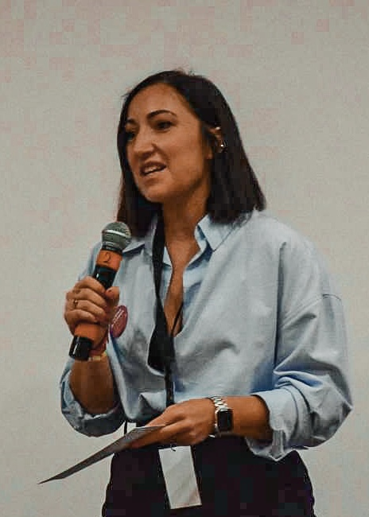
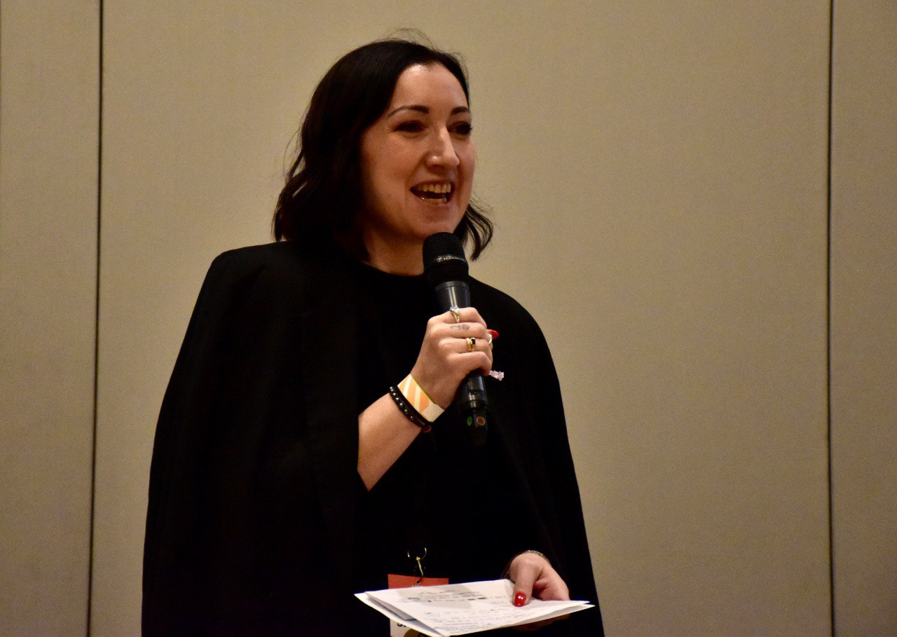
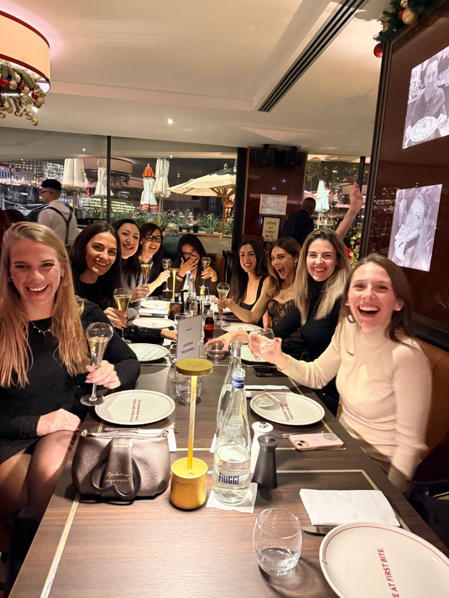

Investire su te stessa può aprire nuove possibilità: più consapevolezza, competenze, relazioni e un progetto professionale da costruire con i tuoi tempi. Anche mentre continui il tuo lavoro.
ParliamoneLa crescita personale non è un traguardo da raggiungere prima di cominciare: è parte del percorso. Prenderti cura di te, imparare a comunicare, metterti in gioco e acquisire nuove competenze può aiutarti a costruire un'attività indipendente e a condividere la tua esperienza con altre donne.
Puoi affiancare questo progetto alla tua occupazione attuale, scegliendo quanto tempo dedicargli in base ai tuoi impegni e ai tuoi obiettivi. Attraverso la formazione, le nuove competenze, le relazioni e la costanza, puoi costruire gradualmente qualcosa di tuo, senza dover stravolgere la tua vita da un giorno all’altro.


Dieci anni fa lavoravo di notte come allestitrice in un supermercato. Ho conosciuto questa attività mentre continuavo il mio lavoro: prima ho investito su me stessa, poi ho imparato a costruire un progetto indipendente.
Dopo circa due anni il mio guadagno dall'attività aveva raggiunto quello dello stipendio; in seguito ho scelto di dedicarle tutto il mio tempo. È la mia esperienza personale, non una previsione dei risultati di chi inizia oggi.
Oggi HerGlow Era nasce anche per offrire ad altre donne un luogo in cui crescere, confrontarsi e non sentirsi sole.
Conosci prodotti, clienti, attività quotidiane, modello di compenso e opportunità di crescita personale.
Esaminiamo insieme i costi iniziali, gli eventuali acquisti, il tempo disponibile e i tuoi obiettivi, senza obbligo di adesione.
Se scegli di partire, puoi contare su formazione, incontri e supporto della community, mantenendo il tuo lavoro attuale.

Incontri, strumenti, formazione e persone con cui condividere dubbi, progressi e nuove competenze. Un ambiente in cui puoi crescere senza dover avere già tutte le risposte.
Scopri RESTART con meNon devi avere già tutte le risposte. Qui trovi quelle alle domande che ricevo più spesso.
Non devi sapere già fare tutto: comunicazione, ascolto e presentazione dei prodotti sono competenze che puoi imparare con formazione e affiancamento.
Non serve essere influencer. Puoi iniziare dalle relazioni autentiche e imparare a conoscere nuove persone, anche fuori dai social.
Puoi affiancare l'attività al tuo lavoro e organizzare il tempo in base ai tuoi impegni. I risultati richiedono comunque costanza e attività concreta.
È normale avere dubbi quando si prova qualcosa di nuovo. Non devi convincere tutti: puoi informarti e scegliere liberamente se questo progetto fa per te.
Puoi imparare a costruire relazioni, ampliare la tua rete e conoscere persone attraverso eventi, attività e community.
Raccontami cosa ti incuriosisce, cosa ti frena o cosa vorresti sapere. Ti risponderò personalmente, senza impegno.
Si aprirà WhatsApp con il messaggio già scritto. Potrai rileggerlo prima di inviarlo.